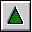
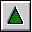

Error LNK2029
Error LNK2029
The error LNK2029 is caused by the linker when you have OCL calls in your
source, but you didn't compile with the /Gm+ parameter. The
error may look as follows:
CPPOOC3.LIB (iexcept.cpp) : error LNK2029: "_errno" : unresolved external
Charlie Choc (cchoc@mindspring.com) says:
Make sure you are compiling with the Gm+ option, the Open Class
Library requires the multi-threaded otpion. In a multi-thread
environment _errno is a function, in a single thread environment
it is an int.
Another situation that will cause a LNK2029 error is when a method for a
class has been declared, but not defined in any of the source files. For
example, the linker will generate the following error:
test.obj(test.cpp) : error LNK2029: "{MyWindow}IVBase::virtual-fn-table-ptr" : unresolved external
if the following source file is compiled & linked:
(note that while the constructor has been declared and defined,
the destructor was declared but accidently left out undefined)
#include <iframe.hpp>
class mywindow : public IFrameWindow
{ public:
MyWindow();
~MyWindow();
};
MyWindow::MyWindow() : IFrameWindow()
{ return; }
int main()
{ return 0; }
- Note:
- See also
Required Compiler Flag and
How to Link
![[Home]](../32x32_home_o.gif) 

Page generated by Stéphane Charette on 1997 November 02
Open Class Library (OCL) FAQ © Stéphane Charette, 1997